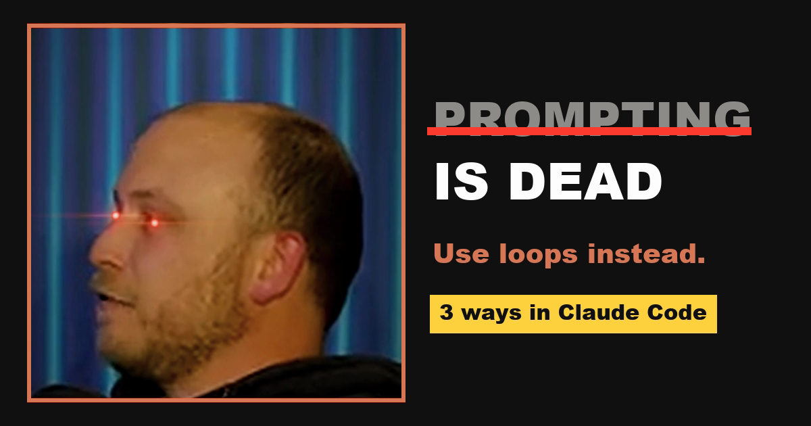

From the reel · Claude Code
Prompting is dead. Run a loop instead.
The man who built Claude Code doesn't prompt Claude anymore. He gives it a goal and a finish line, and a loop keeps Claude working, checking and fixing until it gets there. Here is how to do the same, in three ways.

What Boris Cherny
actually said.
At Acquired Unplugged (presented by WorkOS, June 2026), Boris Cherny, who created Claude Code, described how his own work changed:
“I don't prompt Claude anymore. I have loops that are running. They're the ones that are prompting Claude and kind of figuring out what to do. My job is to write loops.”Boris Cherny, around 11:40 in the talk
Before that he had uninstalled his code editor and was running five to ten Claude sessions in parallel, prompting each one by hand. The loop is the next step: you stop typing every instruction and start writing the finish line.
The difference
Prompting vs looping.
You are the babysitter
You ask, Claude answers, you check it, you ask again. Every step waits for you.
You write the finish line
"All tests pass." Claude works, checks itself, fixes what failed, and repeats until that is true.
The check must be able to fail
"Looks good" is not a check. A test result, a build exit code, or a file count is.
The setup
Three ways to loop in Claude Code.
/goal: keep working until the finish line is true
Type /goal and a condition. After every turn, a separate model checks whether the condition holds. If not, Claude starts another turn on its own. It stops when the condition is met or judged impossible, or when you run /goal clear. Run it in auto mode if you want the turns to run without approval prompts.
/goal all tests in test/auth pass and the lint step is clean. Prove it by running npm test and npm run lint. Do not modify any other test file. Stop after 20 turns.
Check progress with /goal, stop it with /goal clear. Source: Claude Code docs: /goal.
The Ralph Wiggum loop
Anthropic's own plugin, named after Ralph from The Simpsons. A Stop hook blocks Claude every time it tries to finish and feeds the same prompt back, so Claude keeps improving on its own past work until it prints your completion word. Always set a max number of loops.
/plugin marketplace add anthropics/claude-code /plugin install ralph-wiggum@claude-code-plugins /ralph-loop "Build a REST API for todos with CRUD, input validation and tests. Write failing tests first, then make them pass. Output <promise>COMPLETE</promise> when every test passes." --completion-promise "COMPLETE" --max-iterations 20
Stop it with /cancel-ralph. The plugin's README reports a $50k contract finished for $297 in API costs and six repos built overnight in YC hackathon testing. Source: anthropics/claude-code · ralph-wiggum.
/loop: re-run a prompt on an interval
For work that should check back over time, like watching a deploy or a pull request. Runs while the session is open; recurring loops expire after seven days.
/loop 10m check whether CI passed on my PR. If it failed, read the log, push a minimal fix, and tell me what you changed.
Press Esc to stop a self-paced loop. Source: Claude Code docs: scheduled tasks.
The part that matters
Write a finish line Claude can prove.
One measurable end state
A test result, a build exit code, a file count, an empty queue.
A stated check
Say how to prove it: "npm test exits 0", "git status is clean".
Limits
What must not change, and a cap such as "stop after 20 turns".
/goal [what must be true when you're done]. Prove it by running [the command that shows it]. Do not change [files or areas that must stay untouched]. Stop after [number] turns and tell me what is blocking you if it isn't done.
Before you walk away
Three rules for safe loops.
Loop on a branch
Commit first and run the loop on a new git branch, so a bad run is one revert away.
Always set a limit
Turns or iterations. A loop chasing an impossible goal keeps spending until you stop it.
Approve the last step
Let the loop do the work, then review the final diff yourself before it merges or ships.
Came here from the Reel?
Here is your LOOP setup.
You commented LOOP for this page. Start with /goal on one small task with a test you can run, and watch Claude finish it without you.